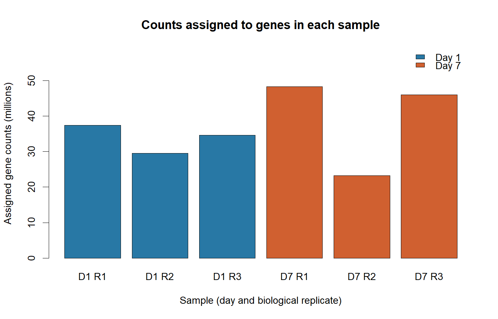
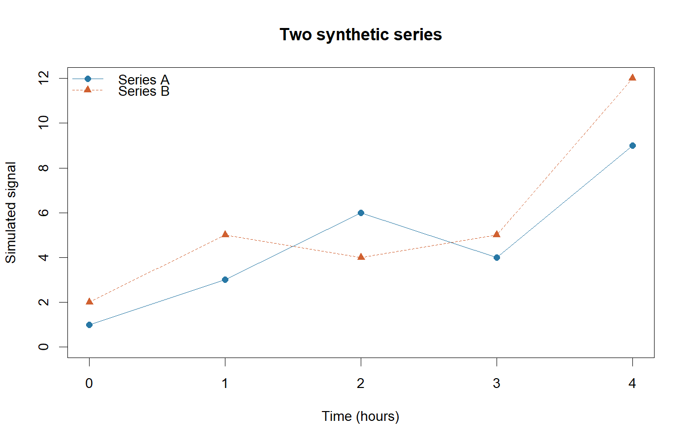
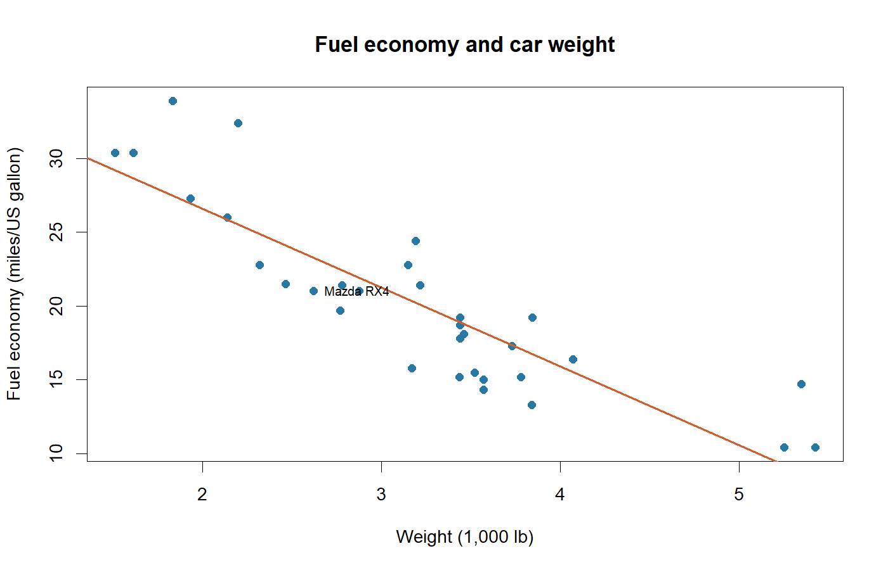
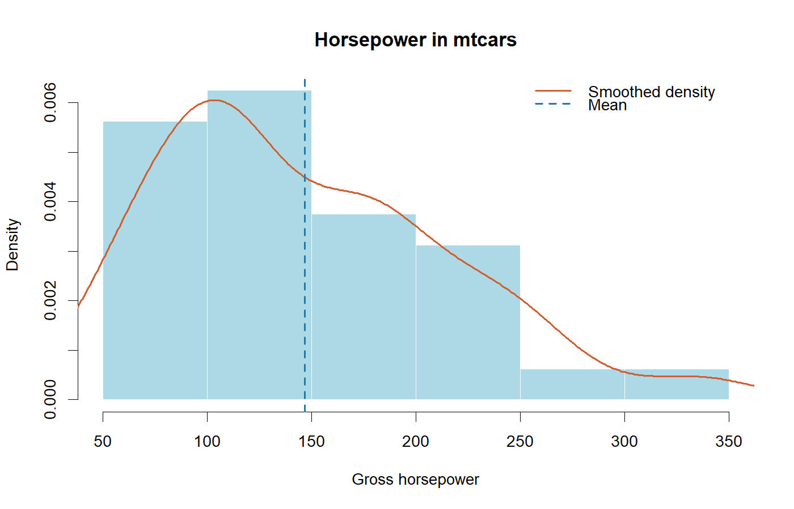
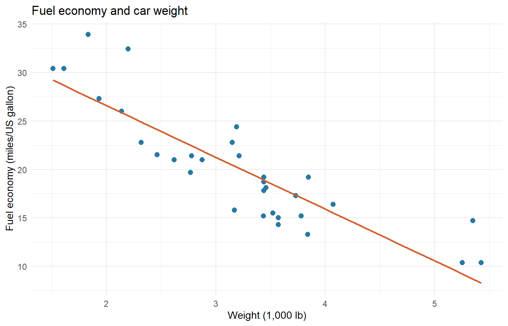
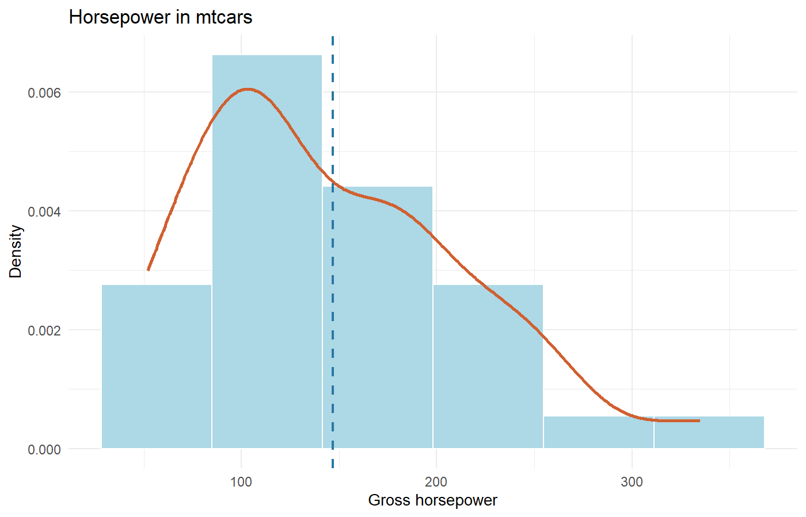

Introduction to R
R is a language and environment for statistical computing and graphics. It runs on Windows, macOS, and Linux, and its open-source community develops packages for many kinds of analysis.
In this lab, we will use R to prepare the gene-count tables used in the next RNA-seq lesson. The course data contain six C. elegans N2 samples: day-1 and day-7 adults, with three biological replicates per group. The two ages are separate groups, not a continuous time series.
By the end, you should be able to:
- Create and inspect variables, vectors, matrices, data frames, and lists.
- Select rows and columns, and use a function on several files.
- Combine six STAR count tables while keeping gene and sample identifiers aligned.
- Make labeled plots and explain what they show.
Allow about 60–90 minutes for Sections 1–4. Section 5 provides optional ggplot2 practice. Run code cells from top to bottom; later cells use objects created earlier.
1. Start an R session
Open this notebook with the Colab button above, or use an R notebook in Jupyter. The notebook specifies an R kernel. You can also run its R code in RStudio. The examples are R code, so use an R session to run them. The first command should print an R version.
Sections 1–4 use packages included with R. Section 3 downloads six small count tables from the course repository; it does not require the original FASTQ files or a cluster account. Internet access is needed for that download. Section 5 additionally uses ggplot2.
In a notebook, run a cell with Shift+Enter. Text after # is a comment. If you restart the session, run the preceding cells again.
R.version.string
getwd()
Variables and basic data types
Use <- to assign a value to an object. R is case-sensitive: gene1 and Gene1 are different names. For ordinary object names, start with a letter (or a dot not followed by a number); letters, numbers, dots, and underscores can follow. Avoid spaces, reserved words such as if, and names of functions such as rep.
We will use numeric values for counts, character values for names, and logical values (TRUE or FALSE) for comparisons. 150 is stored as a double-precision number; 150L explicitly creates an integer.
# Assign two numeric values, then display them.
gene1 <- 150
gene2 <- 200
gene1
gene2
# Character values need quotation marks.
gene_name <- "KRAS"
gene_name
[1] 150
[1] 200
[1] "KRAS"
gene1 > gene2
gene1 < gene2
is_lower <- gene1 < gene2
is_lower
class(gene1)
class(gene_name)
class(is_lower)
class(150L)
[1] FALSE
[1] TRUE
[1] TRUE
[1] "numeric"
[1] "character"
[1] "logical"
[1] "integer"
< and > compare values; == tests equality. <- assigns a value. A function call uses a function name followed by parentheses, with arguments inside: class(gene1) asks for the class of gene1. Try ?class in an R console to open its help.
Check your understanding: What will gene1 == gene2 return? What changes if you assign gene2 <- 150? Restore gene2 <- 200 afterward.
Functions
A function is reusable code with named inputs called arguments. This function adds 1 before taking a base-2 logarithm, so a zero count becomes 0 rather than negative infinity. The last expression is returned; return() is optional.
log2_transform <- function(x) {
log2(x + 1)
}
log2_transform(gene1)
log2_transform(0)
[1] 7.238405
[1] 0
2. Organize data in R
Atomic vectors and indexing
An atomic vector holds values of one underlying type. c() combines values into a vector. Combining numbers and character strings converts the numbers to character strings. R indexes start at 1.
sample_names <- c("N2_day1_rep1", "N2_day1_rep2", "N2_day1_rep3",
"N2_day7_rep1", "N2_day7_rep2", "N2_day7_rep3")
sample_names
length(sample_names)
sample_names[1]
sample_names[c(1, 4)]
counts <- c(0, 10, 150, 200)
counts[counts >= 100]
[1] "N2_day1_rep1" "N2_day1_rep2" "N2_day1_rep3" "N2_day7_rep1" "N2_day7_rep2"
[6] "N2_day7_rep3"
[1] 6
[1] "N2_day1_rep1"
[1] "N2_day1_rep1" "N2_day7_rep1"
[1] 150 200
Extract information from sample names
sub(pattern, replacement, x) replaces the first match in each string; gsub() replaces all matches. Patterns are regular expressions: [0-9]+ means one or more digits, $ marks the end, ^ marks the start, and .* matches any number of characters. Anchoring the replicate suffix avoids leaving part of a multi-digit replicate number behind.
Here we remove _rep1, _rep2, or _rep3 to obtain the group, and keep the digits after _rep to obtain the replicate number. This parsing depends on the course naming convention. For other experiments, use a sample sheet supplied with the data.
group <- sub("_rep[0-9]+$", "", sample_names)
replicate_id <- as.integer(sub("^.*_rep", "", sample_names))
group
replicate_id
[1] "N2_day1" "N2_day1" "N2_day1" "N2_day7" "N2_day7" "N2_day7"
[1] 1 2 3 1 2 3
Matrices and data frames
A matrix has rows and columns. An atomic matrix uses one underlying type for every entry, so combining character groups with integer replicate numbers makes all entries character. cbind() combines columns; rownames() assigns row labels; t() swaps rows and columns.
sample_matrix <- cbind(group = group, replicate = replicate_id)
rownames(sample_matrix) <- sample_names
sample_matrix
is.matrix(sample_matrix)
str(sample_matrix)
t(sample_matrix)
group replicate
N2_day1_rep1 "N2_day1" "1"
N2_day1_rep2 "N2_day1" "2"
N2_day1_rep3 "N2_day1" "3"
N2_day7_rep1 "N2_day7" "1"
N2_day7_rep2 "N2_day7" "2"
N2_day7_rep3 "N2_day7" "3"
[1] TRUE
chr [1:6, 1:2] "N2_day1" "N2_day1" "N2_day1" "N2_day7" "N2_day7" "N2_day7" ...
- attr(*, "dimnames")=List of 2
..$ : chr [1:6] "N2_day1_rep1" "N2_day1_rep2" "N2_day1_rep3" "N2_day7_rep1" ...
..$ : chr [1:2] "group" "replicate"
N2_day1_rep1 N2_day1_rep2 N2_day1_rep3 N2_day7_rep1 N2_day7_rep2
group "N2_day1" "N2_day1" "N2_day1" "N2_day7" "N2_day7"
replicate "1" "2" "3" "1" "2"
N2_day7_rep3
group "N2_day7"
replicate "3"
A data frame lets different columns retain different types. It is a better choice for sample metadata. Construct it directly so the replicate column stays integer. A factor represents categories; setting its levels explicitly makes day 1 the reference level for a later comparison.
Replicate numbers label biological replicates within each group. Matching replicate numbers across groups do not establish pairing.
coldata_df <- data.frame(
group = factor(group, levels = c("N2_day1", "N2_day7")),
replicate = replicate_id,
row.names = sample_names
)
coldata_df
is.data.frame(coldata_df)
str(coldata_df)
table(coldata_df$group)
group replicate
N2_day1_rep1 N2_day1 1
N2_day1_rep2 N2_day1 2
N2_day1_rep3 N2_day1 3
N2_day7_rep1 N2_day7 1
N2_day7_rep2 N2_day7 2
N2_day7_rep3 N2_day7 3
[1] TRUE
'data.frame': 6 obs. of 2 variables:
$ group : Factor w/ 2 levels "N2_day1","N2_day7": 1 1 1 2 2 2
$ replicate: int 1 2 3 1 2 3
N2_day1 N2_day7
3 3
For a data frame, use object[rows, columns]. Leaving either position blank keeps all of those rows or columns. $ selects a named column. drop = FALSE keeps a single-column selection as a data frame.
coldata_df[1:3, , drop = FALSE]
coldata_df[, "group", drop = FALSE]
coldata_df[coldata_df$group == "N2_day7", , drop = FALSE]
group replicate
N2_day1_rep1 N2_day1 1
N2_day1_rep2 N2_day1 2
N2_day1_rep3 N2_day1 3
group
N2_day1_rep1 N2_day1
N2_day1_rep2 N2_day1
N2_day1_rep3 N2_day1
N2_day7_rep1 N2_day7
N2_day7_rep2 N2_day7
N2_day7_rep3 N2_day7
group replicate
N2_day7_rep1 N2_day7 1
N2_day7_rep2 N2_day7 2
N2_day7_rep3 N2_day7 3
Missing values
NA represents a missing value, which is different from a measured count of zero. Use is.na() to find missing values. The example below shows how na.rm = TRUE changes a summary; decide why a value is missing before excluding it from an analysis.
example_counts <- c(0, 10, NA, 20)
is.na(example_counts)
mean(example_counts)
mean(example_counts, na.rm = TRUE)
[1] FALSE FALSE TRUE FALSE
[1] NA
[1] 10
Lists and lapply()
A list can hold objects of different types, including vectors and data frames. lapply() calls a function once on each list element and returns a list. Here the inputs are two count vectors. [[1]] extracts the first list element; [1] returns a list containing that element.
gene_counts <- list(gene1 = c(10, 20), gene2 = c(0, 100))
gene_counts[[1]]
lapply(gene_counts, log2_transform)
[1] 10 20
$gene1
[1] 3.459432 4.392317
$gene2
[1] 0.000000 6.658211
Check your understanding: Why did the replicate numbers become character values in sample_matrix? Which data-frame expression selects the three day-1 samples?
3. Read and combine STAR count files
Download the course tables
getwd() shows the current working directory. Relative paths are interpreted from that directory. We will store this lesson's inputs in introR_counts/, using file.path() so paths work across operating systems.
The download uses a fixed repository revision to keep the example data reproducible. Existing files are reused. If you already have a local repository checkout, you can instead set data_dir to its data/bulkRNA_SE_tab directory before running this cell.
data_dir <- "introR_counts"
dir.create(data_dir, showWarnings = FALSE, recursive = TRUE)
file_suffix <- ".ReadsPerGene.out.tab"
expected_files <- paste0(sample_names, file_suffix)
data_revision <- "3ae91df81a2849a69b90157c4e75f6f8089cd44b"
base_url <- paste0("https://raw.githubusercontent.com/Bix4UMD/BIOI611_lab/",
data_revision, "/data/bulkRNA_SE_tab/")
for (filename in expected_files) {
destination <- file.path(data_dir, filename)
if (!file.exists(destination)) {
download.file(paste0(base_url, filename), destfile = destination,
mode = "wb", quiet = TRUE)
}
}
list.files(data_dir)
[1] "N2_day1_rep1.ReadsPerGene.out.tab" "N2_day1_rep2.ReadsPerGene.out.tab"
[3] "N2_day1_rep3.ReadsPerGene.out.tab" "N2_day7_rep1.ReadsPerGene.out.tab"
[5] "N2_day7_rep2.ReadsPerGene.out.tab" "N2_day7_rep3.ReadsPerGene.out.tab"
list.files(pattern = ...) expects a regular expression rather than a shell wildcard. In an R string, \\. matches a literal dot. The final $ requires the filename to end at .tab.
We check that all six expected files are present and put them in the same order as sample_names. stopifnot() stops with an error if any check is false.
file_paths <- list.files(
data_dir,
pattern = "\\.ReadsPerGene\\.out\\.tab$",
full.names = TRUE
)
stopifnot(setequal(basename(file_paths), expected_files))
file_paths <- file_paths[match(expected_files, basename(file_paths))]
file_paths
[1] "introR_counts/N2_day1_rep1.ReadsPerGene.out.tab"
[2] "introR_counts/N2_day1_rep2.ReadsPerGene.out.tab"
[3] "introR_counts/N2_day1_rep3.ReadsPerGene.out.tab"
[4] "introR_counts/N2_day7_rep1.ReadsPerGene.out.tab"
[5] "introR_counts/N2_day7_rep2.ReadsPerGene.out.tab"
[6] "introR_counts/N2_day7_rep3.ReadsPerGene.out.tab"
Inspect one file before writing a function
STAR's ReadsPerGene.out.tab has no header and contains four tab-separated columns:
| Column | Meaning |
|---|---|
| 1 | Gene identifier, or a summary-row label |
| 2 | Counts without considering strand |
| 3 | Counts when read 1 is on the same strand as the RNA |
| 4 | Counts when read 1 is on the opposite strand to the RNA |
For single-end data, read 1 is the sequenced read. For paired-end data, the read-2 orientation is opposite. The first four rows are summaries (N_unmapped, N_multimapping, N_noFeature, N_ambiguous), not genes. See the STAR manual, gene-counting section.
We use column 2 for this R programming exercise, matching the existing course examples. Before biological analysis, confirm the library protocol and strandedness to choose the appropriate count column. This notebook does not establish the strandedness of these libraries.
star_table <- read.table(file_paths[1], header = FALSE, sep = "\t",
stringsAsFactors = FALSE)
head(star_table)
dim(star_table)
str(star_table)
V1 V2 V3 V4
1 N_unmapped 1332776 1332776 1332776
2 N_multimapping 1540190 1540190 1540190
3 N_noFeature 157102 19017455 18933214
4 N_ambiguous 536422 128854 120342
5 WBGene00000003 341 161 180
6 WBGene00000007 416 215 202
[1] 46930 4
'data.frame': 46930 obs. of 4 variables:
$ V1: chr "N_unmapped" "N_multimapping" "N_noFeature" "N_ambiguous" ...
$ V2: int 1332776 1540190 157102 536422 341 416 0 6 1572 0 ...
$ V3: int 1332776 1540190 19017455 128854 161 215 0 4 814 0 ...
$ V4: int 1332776 1540190 18933214 120342 180 202 0 2 794 0 ...
Turn a repeated task into a function
The function below reads one file, keeps the selected count column, removes the four summary labels by name, and names the count column after the sample. Checks catch a malformed table, duplicate gene identifiers, or invalid counts before combining files. They should stop the analysis rather than silently turn missing data into zeros.
count_column = 2L supplies a default argument. For a verified stranded protocol, the appropriate value may be 3L or 4L. return(df) makes the result explicit.
read_star_file <- function(file_path, count_column = 2L) {
stopifnot(length(count_column) == 1L, count_column %in% 2:4)
df <- read.table(file_path, header = FALSE, sep = "\t",
stringsAsFactors = FALSE)
stopifnot(ncol(df) == 4L)
df <- df[, c(1L, count_column), drop = FALSE]
summary_rows <- c("N_unmapped", "N_multimapping",
"N_noFeature", "N_ambiguous")
stopifnot(all(summary_rows %in% df[[1]]))
df <- df[!df[[1]] %in% summary_rows, , drop = FALSE]
stopifnot(nrow(df) > 0L, !anyNA(df), !anyDuplicated(df[[1]]),
is.numeric(df[[2]]), all(is.finite(df[[2]])),
all(df[[2]] >= 0), all(df[[2]] == floor(df[[2]])))
sample_id <- sub("\\.ReadsPerGene\\.out\\.tab$", "", basename(file_path))
colnames(df) <- c("GeneID", sample_id)
return(df)
}
tab_N2_day1_rep1 <- read_star_file(file_paths[1])
head(tab_N2_day1_rep1)
dim(tab_N2_day1_rep1)
GeneID N2_day1_rep1
5 WBGene00000003 341
6 WBGene00000007 416
7 WBGene00000014 0
8 WBGene00000015 6
9 WBGene00000022 1572
10 WBGene00000024 0
[1] 46926 2
Merge two tables by gene identifier
merge(..., by = "GeneID") matches identifiers, so it does not assume that the input rows have the same order. Its default is an inner join: genes missing from either table would be dropped. We first require the same gene set. Unique sample-column names also avoid confusing names such as V2.x and V2.y.
tab_N2_day1_rep2 <- read_star_file(file_paths[2])
stopifnot(setequal(tab_N2_day1_rep1$GeneID, tab_N2_day1_rep2$GeneID))
two_samples <- merge(tab_N2_day1_rep1, tab_N2_day1_rep2, by = "GeneID")
head(two_samples)
GeneID N2_day1_rep1 N2_day1_rep2
1 WBGene00000001 3227 2168
2 WBGene00000002 270 203
3 WBGene00000003 341 415
4 WBGene00000004 584 438
5 WBGene00000005 383 395
6 WBGene00000006 343 344
Apply the same steps to all six samples
lapply() reads each file into a list of data frames. Reduce() repeatedly merges the next table into the accumulated result. Check that every table has the same gene set before the inner joins.
This cell is a worked example: focus first on the inputs, the result, and why the checks matter. You can return to the anonymous function(x, y) syntax after practicing with two tables.
list_of_dfs <- lapply(file_paths, read_star_file)
same_genes <- vapply(list_of_dfs, function(df) {
setequal(df$GeneID, list_of_dfs[[1]]$GeneID)
}, logical(1))
stopifnot(all(same_genes))
merged_df <- Reduce(function(x, y) merge(x, y, by = "GeneID"), list_of_dfs)
merged_df <- merged_df[, c("GeneID", sample_names), drop = FALSE]
head(merged_df)
dim(merged_df)
GeneID N2_day1_rep1 N2_day1_rep2 N2_day1_rep3 N2_day7_rep1
1 WBGene00000001 3227 2168 2589 5659
2 WBGene00000002 270 203 266 355
3 WBGene00000003 341 415 411 387
4 WBGene00000004 584 438 518 1028
5 WBGene00000005 383 395 483 119
6 WBGene00000006 343 344 334 206
N2_day7_rep2 N2_day7_rep3
1 2619 5239
2 191 425
3 255 499
4 541 888
5 65 189
6 114 220
[1] 46926 7
Prepare the count matrix and sample metadata
For the next lesson, genes are rows of the count matrix and samples are columns. Sample metadata have one row per sample. The matrix column names must match metadata row names in the same order. Keep gene identifiers as row names, outside the numeric matrix.
merged_df remains a table with a GeneID column; count_matrix contains only raw gene counts. These objects have different roles. DESeq2 expects raw, non-negative whole-number counts, not TPM, percentages, or the log2(count + 1) values used for display.
count_matrix <- as.matrix(merged_df[, sample_names, drop = FALSE])
rownames(count_matrix) <- merged_df$GeneID
coldata_df <- coldata_df[colnames(count_matrix), , drop = FALSE]
stopifnot(is.numeric(count_matrix), !anyNA(count_matrix),
all(count_matrix >= 0),
all(count_matrix == floor(count_matrix)),
identical(colnames(count_matrix), rownames(coldata_df)))
dim(count_matrix)
table(coldata_df$group)
identical(colnames(count_matrix), rownames(coldata_df))
[1] 46926 6
N2_day1 N2_day7
3 3
[1] TRUE
For these files, expect 46,926 gene rows and 6 sample columns, three samples in each group, and TRUE for the ordering check. This row count describes this particular annotation; it is not a universal expected number of genes.
The following files are saved to an introR_results/ directory. row.names = FALSE avoids writing an extra numbered column to the count CSV. The metadata CSV deliberately includes sample identifiers as row names.
results_dir <- "introR_results"
dir.create(results_dir, showWarnings = FALSE, recursive = TRUE)
write.csv(merged_df, file.path(results_dir, "combined_gene_counts.csv"),
row.names = FALSE)
write.csv(coldata_df, file.path(results_dir, "sample_metadata.csv"),
row.names = TRUE)
saveRDS(list(count_matrix = count_matrix, coldata = coldata_df),
file.path(results_dir, "introR_counts_and_metadata.rds"))
Check your understanding: Why should the four STAR summary rows be excluded? Why is attaching counts with cbind() unsafe if gene orders differ? Why does a zero count mean something different from NA?
4. Produce graphs with base R
Plot a summary of the course data
colSums() adds counts across gene rows for each sample. These are assigned gene counts, not total sequenced reads: unmapped, ambiguous, and other unassigned reads are excluded. Differences may reflect sequencing depth and other technical or biological effects. This plot is a preliminary check, not a differential-expression test.
assigned_counts <- colSums(count_matrix)
group_colors <- c(N2_day1 = "#2878A5", N2_day7 = "#D06030")
sample_colors <- unname(group_colors[as.character(coldata_df$group)])
barplot(assigned_counts / 1e6,
names.arg = c("D1 R1", "D1 R2", "D1 R3", "D7 R1", "D7 R2", "D7 R3"),
col = sample_colors,
ylim = c(0, max(assigned_counts / 1e6) * 1.22),
main = "Counts assigned to genes in each sample",
xlab = "Sample (day and biological replicate)",
ylab = "Assigned gene counts (millions)")
legend("topright", legend = c("Day 1", "Day 7"), fill = group_colors,
bty = "n")

Points and lines
Use lines when the x-axis represents an ordered quantity such as time. The following values are synthetic plotting practice, separate from the RNA-seq samples. type = "o" draws both points and connecting lines. lines() adds a series to the existing plot.
time_hours <- c(0, 1, 2, 3, 4)
series_a <- c(1, 3, 6, 4, 9)
series_b <- c(2, 5, 4, 5, 12)
plot(time_hours, series_a, type = "o", col = "#2878A5", pch = 16,
ylim = c(0, 12), xlab = "Time (hours)", ylab = "Simulated signal",
main = "Two synthetic series")
lines(time_hours, series_b, type = "o", col = "#D06030", pch = 17, lty = 2)
legend("topleft", legend = c("Series A", "Series B"),
col = c("#2878A5", "#D06030"), pch = c(16, 17), lty = c(1, 2),
bty = "n")

Scatterplots
We use R's built-in mtcars dataset for plotting practice, so no additional download is needed. It describes 32 cars; wt is weight in 1,000 pounds, and mpg is miles per US gallon. Row names contain car model names.
lm(mpg ~ wt, data = mtcars) fits a straight-line relationship. Its line summarizes an association, which by itself does not establish causation.
mtcars <- datasets::mtcars
head(mtcars)
plot(mtcars$wt, mtcars$mpg,
main = "Fuel economy and car weight",
xlab = "Weight (1,000 lb)", ylab = "Fuel economy (miles/US gallon)",
pch = 16, col = "#2878A5")
abline(lm(mpg ~ wt, data = mtcars), col = "#D06030", lwd = 2)
# Label one example to keep the figure readable.
text(mtcars$wt[1], mtcars$mpg[1], labels = rownames(mtcars)[1],
pos = 4, cex = 0.7)
mpg cyl disp hp drat wt qsec vs am gear carb
Mazda RX4 21.0 6 160 110 3.90 2.620 16.46 0 1 4 4
Mazda RX4 Wag 21.0 6 160 110 3.90 2.875 17.02 0 1 4 4
Datsun 710 22.8 4 108 93 3.85 2.320 18.61 1 1 4 1
Hornet 4 Drive 21.4 6 258 110 3.08 3.215 19.44 1 0 3 1
Hornet Sportabout 18.7 8 360 175 3.15 3.440 17.02 0 0 3 2
Valiant 18.1 6 225 105 2.76 3.460 20.22 1 0 3 1

Histograms and density
probability = TRUE scales the histogram so the sum of bar areas is 1. A bar's area (height × width) is the fraction of observations in its interval; its height alone is a density, not a probability. density() adds a smoothed estimate of the distribution. The dashed vertical line marks the mean.
hist(mtcars$hp, probability = TRUE, breaks = 6,
main = "Horsepower in mtcars", xlab = "Gross horsepower",
ylab = "Density", col = "lightblue", border = "white")
lines(density(mtcars$hp), lwd = 2, col = "#D06030")
abline(v = mean(mtcars$hp), lty = "dashed", col = "#2878A5", lwd = 2)
legend("topright", legend = c("Smoothed density", "Mean"),
col = c("#D06030", "#2878A5"), lty = c(1, 2), lwd = 2, bty = "n")

Save a figure
png() opens a graphics file. Draw the plot while that device is open, then call dev.off() to finish writing the file. Look in introR_results/ for the saved image.
png(file.path(results_dir, "mtcars_weight_mpg.png"),
width = 1600, height = 1000, res = 200)
plot(mtcars$wt, mtcars$mpg, pch = 16, col = "#2878A5",
main = "Fuel economy and car weight",
xlab = "Weight (1,000 lb)", ylab = "Fuel economy (miles/US gallon)")
abline(lm(mpg ~ wt, data = mtcars), col = "#D06030", lwd = 2)
dev.off()
5. Optional: produce graphs with ggplot2
Install ggplot2 once in your R environment if needed, then load it for the session. The examples use after_stat() for calculated density and linewidth for line thickness (ggplot2 3.4.0 or later).
ggplot(data, aes(...)) chooses data and maps columns to axes. Add layers with +. A fixed color goes outside aes(); mapping a column to color inside aes() creates groups and a legend.
if (!requireNamespace("ggplot2", quietly = TRUE)) {
install.packages("ggplot2", repos = "https://cloud.r-project.org")
}
stopifnot(packageVersion("ggplot2") >= "3.4.0")
library(ggplot2)
scatter_plot <- ggplot(mtcars, aes(x = wt, y = mpg)) +
geom_point(size = 2.5, color = "#2878A5") +
geom_smooth(method = "lm", formula = y ~ x, se = FALSE,
color = "#D06030", linewidth = 0.8) +
labs(title = "Fuel economy and car weight",
x = "Weight (1,000 lb)", y = "Fuel economy (miles/US gallon)") +
theme_minimal(base_size = 12)
scatter_plot

se = FALSE omits the confidence band so this scatterplot matches the base-R example. The histogram below uses the same density scale as its smoothed curve. Changing the bins or smoothing bandwidth can change the appearance; describe the pattern without treating the smooth curve as the exact population distribution.
density_plot <- ggplot(mtcars, aes(x = hp)) +
geom_histogram(aes(y = after_stat(density)), bins = 6,
fill = "lightblue", color = "white") +
geom_density(color = "#D06030", linewidth = 1) +
geom_vline(xintercept = mean(mtcars$hp), linetype = "dashed",
color = "#2878A5", linewidth = 0.8) +
labs(title = "Horsepower in mtcars", x = "Gross horsepower", y = "Density") +
theme_minimal(base_size = 12)
density_plot
ggsave(file.path(results_dir, "mtcars_ggplot_scatter.png"), plot = scatter_plot,
width = 7, height = 4.5, dpi = 200)

Practice and completion checks
Before moving on, check that your count matrix has 46,926 rows and six columns, that there are three samples per group, and that the sample-order check returns TRUE. Confirm that the two CSV files, RDS file, and base-R PNG exist in introR_results/.
- Use
coldata_dfto select the day-7 sample names. How many are there? - Count genes with at least 10 raw counts in at least three samples. Explain what the two comparisons in your code select.
- Change the point color and title of a scatterplot, then save it with a new filename.
- Explain why neither unequal assigned-count totals nor a high raw count is sufficient evidence for differential expression.
Record the R and package versions used for your work. If you skipped Section 5, run the final cell anyway.
capture.output(sessionInfo(), file = file.path(results_dir, "sessionInfo.txt"))
sessionInfo()
Hints for practice
Try the questions before opening the hints.
Show hints for questions 1 and 2
# 1. Extract row names after selecting the group.
day7_samples <- rownames(coldata_df)[coldata_df$group == "N2_day7"]
day7_samples
length(day7_samples)
# 2. First compare each gene-by-sample count with 10.
# Then count qualifying samples for each gene, and require at least three.
keep <- rowSums(count_matrix >= 10) >= 3
sum(keep)
Troubleshooting
| Message or symptom | What to check |
|---|---|
object ... not found |
Run the cell that creates the object; check spelling and capitalization. After a restart, run from the beginning. |
| Cannot open a count file | Check getwd(), data_dir, internet access, and the download cell. |
| File-list check fails | The selected directory must contain exactly the six expected count tables. Check filenames and use a separate directory for other experiments. |
| Gene-set or duplicate-identifier check fails | Check whether files use the same annotation and whether an input was truncated or edited. Do not remove the check to force a merge. |
Sample-order check is FALSE |
Match count-matrix column names to metadata row names before analysis. |
| ggplot2 version check fails | Update ggplot2, restart R if it was already loaded, then run the notebook again. |
References
- R: An Introduction to R
- R: valid object names
- R: file listing and regular expressions
- R: merging data frames
- STAR manual: gene counts and strand conventions
- R: the built-in mtcars dataset
- R: histogram density scaling
- ggplot2: calculated aesthetics and after_stat()
- ggplot2: density plots
Additional plotting tutorials used in the earlier version of this lesson: